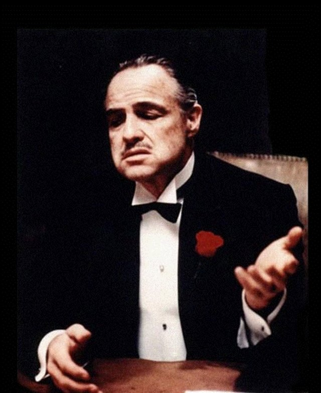
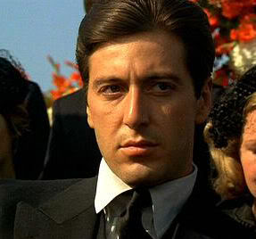

DON
O chefe da familia Corneole, Don Corneole é interpretado pelo polemico, inigualavél e genial Marlon Brando. O protagonista mais carismático e com semblântico de toda a franquia.
MICHAEL
O sucessor do pai ao trono da familia, Michael é uma personagem que tem grandes mudanças de personalidade e pensamento durante a narrativa. O primeiro grande papel de Al Pacino, que viria a ser um dos grandes atores da atualidade.